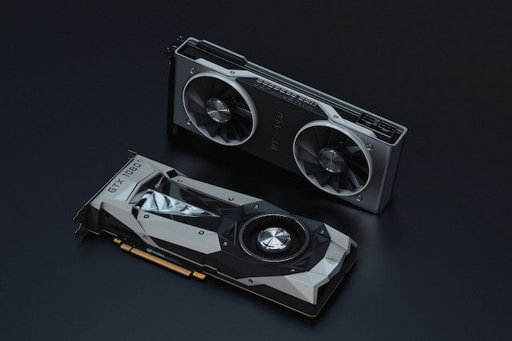
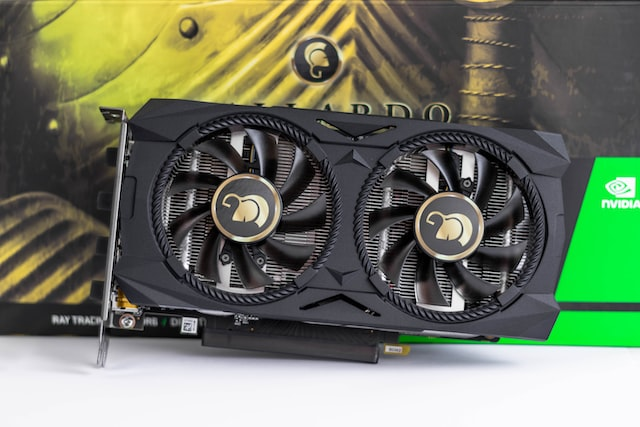
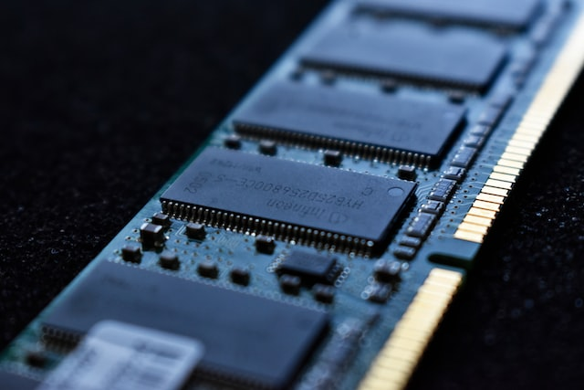
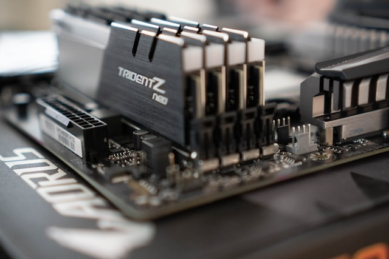
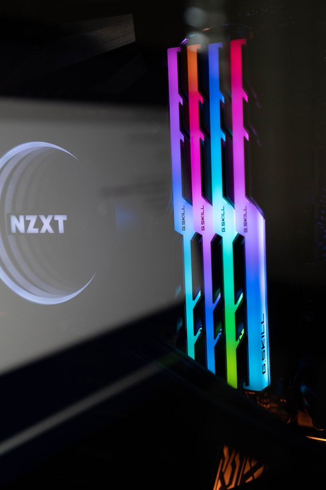
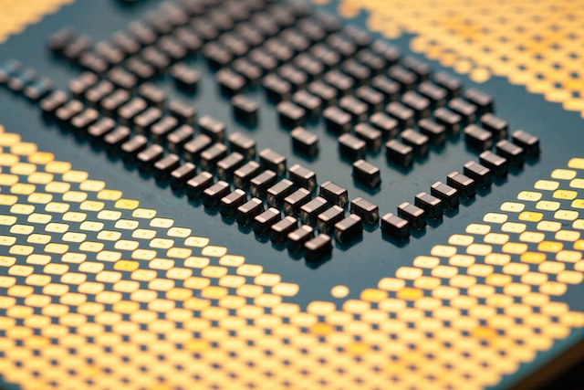
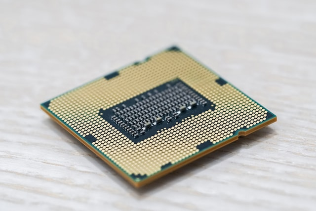
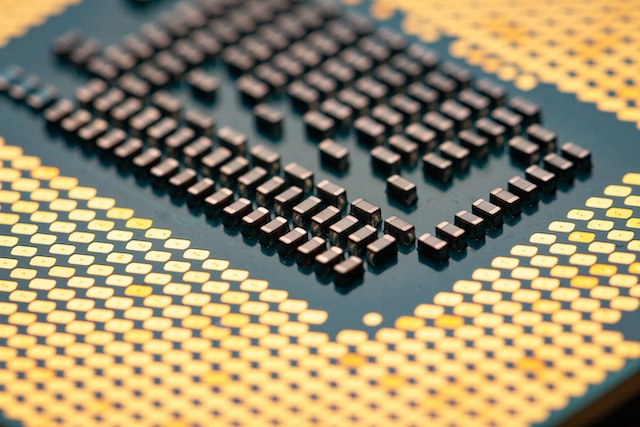
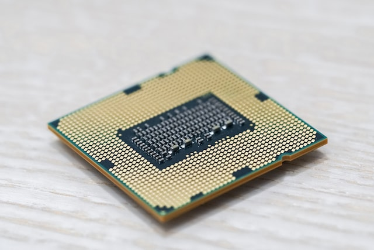

Graphics Card
A graphics card (also called a video card, display card, graphics adapter, GPU, VGA card/VGA, video adapter, or display adapter) is an expansion card which generates a feed of output images to a display device, such as a computer monitor. Frequently, these are advertised as discrete or dedicated graphics cards, emphasizing the distinction between these and integrated graphics. At the core of both is the graphics processing unit (GPU), which is the main component that performs computations, but should not be confused with the graphics card as a whole, even though "GPU" is often used as a metonymic shorthand to refer to graphics cards.
 
Ram
Random-access memory is a form of computer memory that can be read and changed in any order, typically used to store working data and machine code.[1][2] A random-access memory device allows data items to be read or written in almost the same amount of time irrespective of the physical location of data inside the memory, in contrast with other direct-access data storage media (such as hard disks, CD-RWs, DVD-RWs and the older magnetic tapes and drum memory), where the time required to read and write data items varies significantly depending on their physical locations on the recording medium, due to mechanical limitations such as media rotation speeds and arm movement.
  Processor
What Does Processor Mean?
A processor is an integrated electronic circuit that performs the calculations that run a computer. A processor performs arithmetical, logical, input/output (I/O) and other basic instructions that are passed from an operating system (OS). Most other processes are dependent on the operations of a processor.
The terms processor, central processing unit (CPU) and microprocessor are commonly linked as synonyms. Most people use the word “processor” interchangeably with the term “CPU” nowadays, it is technically not correct since the CPU is just one of the processors inside a personal computer (PC).The Graphics Processing Unit (GPU) is another processor, and even some hard drives are technically capable of performing some processing.
 


